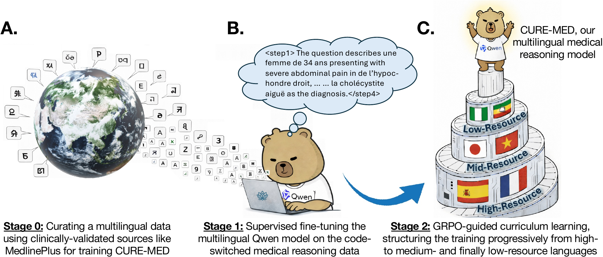

About Me
PhD Candidate at the University of Virginia School of Data Science
I am a PhD candidate in Data Science at the University of Virginia School of Data Science, where I am fortunate to work with
Dr. Chirag Agarwal
in the
AIKYAM Lab.
My research focuses on Trustworthy AI, with particular emphasis on Multilingual AI,
AI Safety, and Multimodal AI.
Before starting my PhD, I earned an MS in Mathematics from the University of Tennessee at Chattanooga, where I worked with
Dr. Lakmali Weerasena
on facility location problems in mathematical optimization.
I received my bachelor's degree in Mathematics with Economics (First Class Honors) from the University of Cape Coast in Ghana.
I am broadly interested in building AI systems that are safe, robust, and worthy of user trust — systems whose outputs are honest, harmless, helpful, and faithful to evidence across diverse users, languages, and contexts.
News
Recent updates and milestones.
Apr 2026
🎉 One paper on multilingual medical reasoning in LLMs accepted to
ACL 2026 (Main Conference, Oral). See you in San Diego!
Jun 2025
Passed the qualifying exam. 🎉
Mar 2025
Gave a talk on applications of large language models at the UVA School of Data Science.
Aug 2023
Started my PhD at the University of Virginia School of Data Science. 🎉
Mar 2023
Received the 2023 Outstanding Master's Student in Mathematics award at UTC. 🎉
Feb 2023
Defended master's thesis: Covering Problem with Minimum-Radius Enclosing Circle.
Apr 2022
Inducted into Pi Mu Epsilon Mathematics Honor Society.
Research
I spend most of my time thinking about how to make AI models more reliable and aligned with human values.
Multilingual AI
How can we build models, representations, and evaluation pipelines that generalize across languages and cultures, while producing responses that are consistent, accurate, and high-quality in the user's language?
AI Safety
How can we detect and mitigate unsafe or misleading behaviors in advanced AI systems, including deception, manipulation, sycophancy, and scheming? I study these through interpretability-based methods, safety evaluations, and work on alignment and control.
Multimodal AI
How do these challenges extend beyond text to models that reason across multiple modalities? I am interested in making multimodal systems robust to distribution shifts, out-of-domain inputs, and safety risks in complex settings.
Publications
Selected publications and ongoing work.

CURE-Med: Curriculum-Informed Reinforcement Learning for Multilingual Medical Reasoning
Eric Onyame, Akash Ghosh, Subhadip Baidya, Sriparna Saha, Xiuying Chen, Chirag Agarwal.
ACL 2026 · Oral
The Robustness of Existing AI Monitors
Eric Onyame, Chirag Agarwal.
In progress
Counterfactual LLM Verifiers for Math and Logic Reasoning Tasks
Elita Lobo, Eric Onyame, Yair Zick, Chirag Agarwal.
In progress
Teaching
Teaching Assistant for core Data Science and AI courses.
Spring 2026
DS 6050: Deep Learning
Led office hours, assisted with assignments, and guided students on optimization, regularization, and neural network architectures.
Fall 2025
DS 7800: Research Methods in Data Science
Supported student research development, methodology design, and critical evaluation of data-driven studies.
Spring 2025
DS 6051: Decoding Large Language Models
Assisted instruction on modern language models, including projects, readings, and practical evaluation and prompting workflows.
Fall 2024
DS 6600: Data Engineering I
Facilitated hands-on sessions on large-scale data systems and data visualization pipelines.
Fall 2024
DS 1001: Foundations of Data Science
Supported student understanding of core data science concepts through discussion, problem-solving, and feedback.
2021 – 2022
Elementary Statistical Analysis; College Algebra (UTC)
Delivered lectures, graded assessments, and provided structured academic support to undergraduate students.
Skills
Technical proficiencies.
Languages
Python
R
Julia
SQL
Tools & Libraries
PyTorch
PySpark
Docker
Git
NumPy
Pandas
Matplotlib
scikit-learn
LaTeX
Cloud Computing